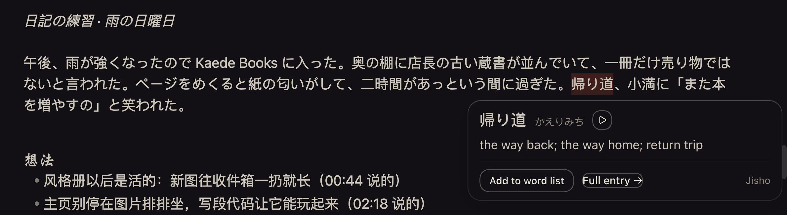
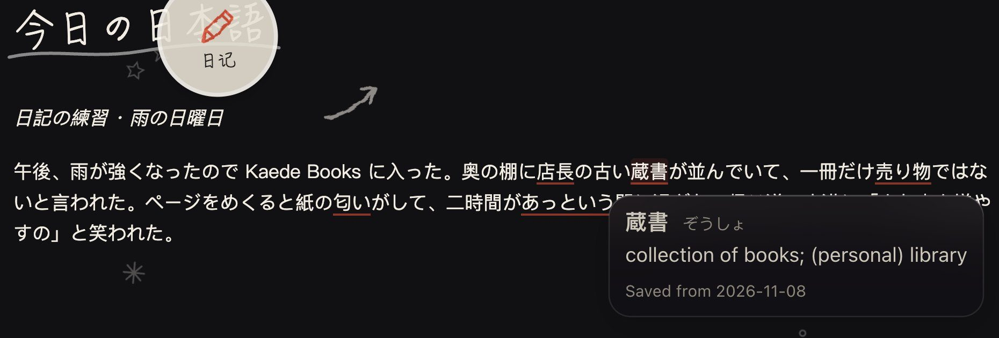
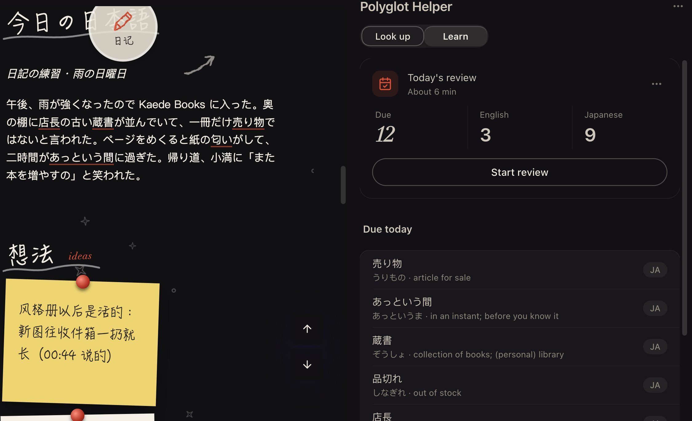
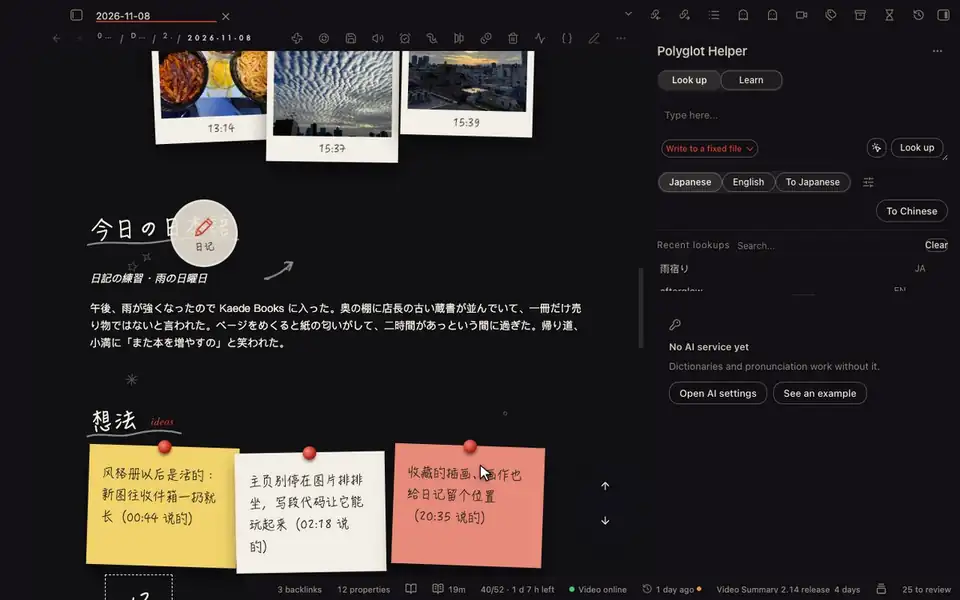

Kaede Books · 2026-11-08 · 日記の練習午後、雨が強くなったので Kaede Books に入った。奥の棚にの古いがいて、一冊だけではないと言われた。ページをめくると紙のがして、二時間がに。
Look up a word where you read. Meet it again.
Polyglot Helper gives you a word card right next to the word, keeps it in your word list, then underlines it in every note and brings it back for review.
-
Look it up
The card opens beside the word.
Select a word and choose Quick word card. You get the kana reading and meaning from Jisho, or from dictionaries for English, without leaving the note. Add to word list keeps it with the sentence it came from.

-
Read it again
Saved words stay underlined.
In reading view every word from your list is underlined, verbs in any form too: 並んで for 並ぶ, 食べた for 食べる. Point at one for its reading, meaning and the note you saved it from. No lookup, no network.

-
Meet it again
It comes back when it is due.
Words return on a schedule you can change, from one day to half a year. Review them in the side panel, or send them to Anki through AnkiConnect: new words become cards, changed ones update, nothing is duplicated.

One word, from a rainy diary page to review.

- Free, no accountThe plugin and the dictionaries cost nothing. Full entries use one AI key of your own.
- Japanese and EnglishJisho and Tatoeba for Japanese; Cambridge, Merriam-Webster and more for English.
- Desktop and mobileOn a phone, tap an underlined word instead of pointing at it.